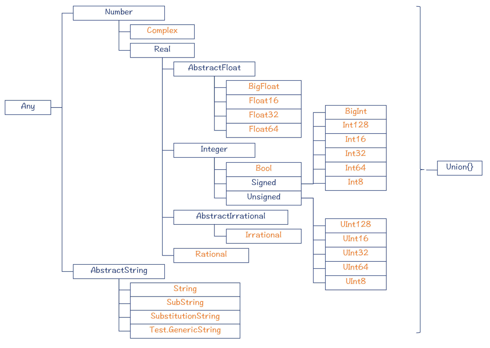
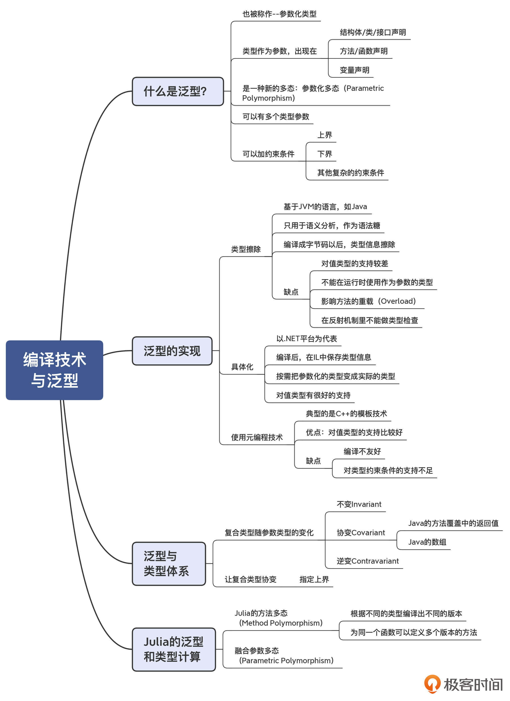

- 00 学习指南 如何学习这门编译原理实战课？.md.html
- 00 开篇词 在真实世界的编译器中游历.md.html
- 01 编译的全过程都悄悄做了哪些事情？.md.html
- 02 词法分析：用两种方式构造有限自动机.md.html
- 03 语法分析：两个基本功和两种算法思路.md.html
- 04 语义分析：让程序符合语义规则.md.html
- 05 运行时机制：程序如何运行，你有发言权.md.html
- 06 中间代码：不是只有一副面孔.md.html
- 07 代码优化：跟编译器做朋友，让你的代码飞起来.md.html
- 08 代码生成：如何实现机器相关的优化？.md.html
- 09 Java编译器（一）：手写的编译器有什么优势？.md.html
- 10 Java编译器（二）：语法分析之后，还要做些什么？.md.html
- 11 Java编译器（三）：属性分析和数据流分析.md.html
- 12 Java编译器（四）：去除语法糖和生成字节码.md.html
- 13 Java JIT编译器（一）：动手修改Graal编译器.md.html
- 14 Java JIT编译器（二）：Sea of Nodes为何如此强大？.md.html
- 15 Java JIT编译器（三）：探究内联和逃逸分析的算法原理.md.html
- 16 Java JIT编译器（四）：Graal的后端是如何工作的？.md.html
- 17 Python编译器（一）：如何用工具生成编译器？.md.html
- 18 Python编译器（二）：从AST到字节码.md.html
- 19 Python编译器（三）：运行时机制.md.html
- 20 JavaScript编译器（一）：V8的解析和编译过程.md.html
- 21 JavaScript编译器（二）：V8的解释器和优化编译器.md.html
- 22 Julia编译器（一）：如何让动态语言性能很高？.md.html
- 23 Julia编译器（二）：如何利用LLVM的优化和后端功能？.md.html
- 24 Go语言编译器：把它当作教科书吧.md.html
- 25 MySQL编译器（一）：解析一条SQL语句的执行过程.md.html
- 26 MySQL编译器（二）：编译技术如何帮你提升数据库性能？.md.html
- 27 课前导读：学习现代语言设计的正确姿势.md.html
- 28 前端总结：语言设计也有人机工程学.md.html
- 29 中端总结：不遗余力地进行代码优化.md.html
- 30 后端总结：充分发挥硬件的能力.md.html
- 31 运行时（一）：从0到语言级的虚拟化.md.html
- 32 运行时（二）：垃圾收集与语言的特性有关吗？.md.html
- 33 并发中的编译技术（一）：如何从语言层面支持线程？.md.html
- 34 并发中的编译技术（二）：如何从语言层面支持协程？.md.html
- 35 并发中的编译技术（三）：Erlang语言厉害在哪里？.md.html
- 36 高级特性（一）：揭秘元编程的实现机制.md.html
- 37 高级特性（二）：揭秘泛型编程的实现机制.md.html
- 38 综合实现（一）：如何实现面向对象编程？.md.html
- 39 综合实现（二）：如何实现函数式编程？.md.html
- 40 成果检验：方舟编译器的优势在哪里？.md.html
- 不定期加餐1 远程办公，需要你我具备什么样的素质？.md.html
- 不定期加餐2 学习技术的过程，其实是训练心理素质的过程.md.html
- 不定期加餐3 这几年，打动我的两本好书.md.html
- 不定期加餐4 从身边的牛人身上，我学到的一些优秀品质.md.html
- 不定期加餐5 借助实例，探究C++编译器的内部机制.md.html
- 划重点 7种编译器的核心概念与算法.md.html
- 期末答疑与总结 再次审视学习编译原理的作用.md.html
- 热点问题答疑 如何吃透7种真实的编译器？.md.html
- 用户故事 易昊：程序员不止有Bug和加班，还有诗和远方.md.html
- 知识地图 一起来复习编译技术核心概念与算法.md.html
- 结束语 实战是唯一标准！.md.html
- 捐赠
37 高级特性（二）：揭秘泛型编程的实现机制
你好，我是宫文学。
对泛型的支持，是现代语言中的一个重要特性。它能有效地降低程序员编程的工作量，避免重复造轮子，写很多雷同的代码。像C++、Java、Scala、Kotlin、Swift和Julia这些语言都支持泛型。至于Go语言，它的开发团队也对泛型技术方案讨论了很久，并可能会在2021年的版本中正式支持泛型。可见，泛型真的是成为各种强类型语言的必备特性了。
那么，泛型有哪些特点？在设计和实现上有哪些不同的方案？编译器应该进行什么样的配合呢？今天这一讲，我就带你一起探讨泛型的实现原理，借此加深你对编译原理相关知识点的认知，让你能够在自己的编程中更好地使用泛型技术。
首先，我们来了解一下什么是泛型。
什么是泛型？
在日常编程中，我们经常会遇到一些代码逻辑，它们除了类型不同，其他逻辑是完全一样的。你可以看一下这段示例代码，里面有两个类，其中一个类是保存Integer的列表，另一个类是保存Student对象的列表。
public class IntegerList{
List data = new ArrayList();
public void add(Integer elem){
data.add(elem);
}
public Integer get(int index){
return (Integer) data.get(index);
}
}
public class StudentList{
List data = new ArrayList();
public void add(Student elem){
data.add(elem);
}
public Student get(int index){
return (Student) data.get(index);
}
}
我们都知道，程序员是很不喜欢重复的代码的。像上面这样的代码，如果要为每种类型都重新写一遍，简直会把人逼疯！
泛型的典型用途是针对集合类型，能够更简单地保存各种类型的数据，比如List、Map这些。在Java语言里，如果用通用的集合类来保存特定类型的对象，就要做很多强制转换工作。而且，我们还要小心地做类型检查。比如：
List strList = new ArrayList(); //字符串列表
strList.add("Richard");
String name = (String)strList.get(i); //类型转换
for (Object obj in strList){
String str = (String)obj; //类型转换
...
}
strList.add(Integer.valueOf(1)); //类型错误
而Java里的泛型功能，就能完全消除这些麻烦工作，让程序更整洁，并且也可以减少出错机会。
List<String> strList = new ArrayList<String>(); //字符串列表
strList.add("Richard");
String name = strList.get(i); //类型转换
for (String str in strList){ //无需类型转换
...
}
strList.add(Integer.valueOf(1)); //编译器报错
像示例程序里用到的List<String>，是在常规的类型后面加了一个参数，使得这个列表变成了专门存储字符串的列表。如果你再查看一下List和ArrayList的源代码，会发现它们比普通的接口和类的声明多了一个类型参数<E>，而这个参数可以用在接口和方法的内部所有需要类型的地方：变量的声明、方法的参数和返回值、类所实现的接口，等等。
public interface List<E> extends Collection<E>{
E get(int index);
boolean add(E e);
...
}
所以说，泛型就是把类型作为参数，出现在类/接口/结构体、方法/函数和变量的声明中。由于类型是作为参数出现的，因此泛型也被称作参数化类型。
参数化类型还可以用于更复杂的情况。比如，你可以使用1个以上的类型参数，像Map就可以使用两个类型参数，一个是key的类型（K），一个是value的类型（V）。
public interface Map<K,V> {
...
}
另外，你还可以对类型参数添加约束条件。比如，你可以要求类型参数必须是某个类型的子类，这是指定了上界（Upper Bound）；你还可以要求类型参数必须是某个类型的一个父类，这是指定了下界（Lower Bound）。实际上，从语言设计的角度来看，你可以对参数施加很多可能的约束条件，比如必须是几个类型之一，等等。
基于泛型的程序，由于传入的参数不同，程序会实现不同的功能。这也被叫做一种多态现象，叫做参数化多态（Parametric Polymorphism）。它跟面向对象中的多态一样，都能让我们编写更加通用的程序。
好了，现在我们已经了解了泛型的含义了。那么，它们是如何在语言中实现的呢？需要用到什么编译技术？
泛型的实现
接下来，我们一起来看一看几种有代表性的语言实现泛型的技术，包括Java、C#、C++等。
类型擦除技术
在Java里，泛型是通过类型擦除（Type Erasure）技术来实现的。前面在分析Java编译器时，你就能发现，其实类型参数只存在于编译过程中，用于做类型检查和类型推断。在此之后，这些类型信息就可以被擦除。ArrayList和ArrayList<String>对应的字节码是一样的，在运行时没有任何区别。
所以，我们可以说，在Java语言里，泛型其实是一种语法糖，有助于减少程序员的编程负担，并能提供额外的类型检查功能。
除了Java以外，其他基于JVM的语言，比如Scala和Kotlin，其泛型机制基本上都是类型擦除技术。
类型擦除技术的优点是实现起来特别简单。运用我们学过的属性计算、类型检查和推断等相关技术基本就够用了。
不过类型擦除技术也有一定的局限性。
问题之一，是它只能适用于引用类型，也就是对象，而不适用于值类型，也就是Java中的基础数据类型（Primitive Type）。比如，你不能声明一个List<int>，来保存单纯的整型数据，你在列表里只能保存对象化的Integer。而我们学习过Java对象的内存模型，知道一个Integer对象所占的内存，是一个int型基础数据的好几倍，因为对象头要有十几个字节的固定开销。再加上由此引起的对象创建和垃圾收集的性能开销，导致用Java的集合对象来保存大量的整型、浮点型等基础数据是非常不划算的。我们在这种情况下，还是要退回到使用数组才行。
问题之二，就是因为类型信息在编译期被擦除了，所以程序无法在运行时使用这些类型信息。比如，在下面的示例代码中，如果你想要根据传入的类型T创建一个新实例，就会导致编译错误。
public static <T> void append(ArrayList<T> a) {
T b= new T(); // 编译错误
a.add(b);
}
同样，由于在运行期没有类型信息，所以如果要用反射机制来调用程序的时候，我们也没有办法像在编译期那样进行类型检查。所以，你完全可以往一个旨在保存String的列表里添加一个Interger对象。而缺少类型检查，可能会导致程序在执行过程中出错。
另外，还有一些由于类型擦除而引起的问题。比如，在使用参数化类型的情况下，方法的重载（Overload）会失败。再比如，下面的示例代码中，两个foo方法看似参数不同。但如果进行了类型擦除以后，它们就没什么区别，所以是不能共存的。
public void foo(List<Integer> p) { ... }
public void foo(List<Double> p) { ... }
你要注意，不仅仅是Java语言的泛型技术有这样的缺点，其他基于JVM实现的语言也有类似的缺点（比如没有办法在运行时使用参数化类型的信息）。这其实是由于JVM的限制导致的。为了理解这个问题，我们可以看一下基于.NET平台的语言 ，比如C#所采用的泛型技术。C#使用的不是类型擦除技术，而是一种叫做具体化（reification）的技术。
具体化技术（Reification）
说起来，C#语言的设计者，安德斯 · 海尔斯伯格（Anders Hejlsberg），是一位令人尊敬的传奇人物。像我这一代的程序员，差不多都使用过他在DOS操作系统上设计的Pascal编译器。后来他在此基础上，设计出了Delphi，也是深受很多人喜爱的一款开发工具。
出于对语言设计者的敬佩，虽然我自己从没用C#写过程序，但我从来没有低估过C#的技术。在泛型方面，C#的技术方案成功地避免了Java泛型的那些缺点。
C#语言编译也会形成IR，然后在.NET平台上运行。在C#语言中，对应于Java字节码的IR被叫做IL，是中间语言（Intermediate Language）的缩写。
我们知道了，在Java的泛型实现中，编译完毕以后类型信息就会被擦除。而在C#生成的IL中，则保留了类型参数的类型信息。所以，List<Student>和List<Teacher>是两个完全不同的类型。也因为IL保存了类型信息，因此我们可以在运行时使用这些类型信息，比如根据类型参数创建对象；而且如果通过反射机制来运行C#程序的话，也会进行类型检查。
还有很重要的一点，就是C#的泛型能够支持值类型，比如基础的整型、浮点型数据；再比如，针对List<int>和List<long>，C#的泛型能够真的生成一份完全不同的可运行的代码。它也不需要把值类型转换成对象，从而导致额外的内存开销和性能开销。
把参数化类型变成实际的类型的过程，是在运行时通过JIT技术实现的。这就是具体化（Reification）的含义。把一个参数化的类型，变成一个运行时真实存在的类型，它可以跟非参数化的类型起到完全相同的作用。
不过，为了支持泛型，其实.NET扩展了C#生成的IL，以便在IL里能够记录参数化类型信息。而JVM则没有改变它的字节码，从而完全是靠编译器来处理泛型。
好了，现在我们已经见识到了两种不同的泛型实现机制。还有一种泛型实现机制，也是经常被拿来比较的，这就是C++的泛型机制，它的泛型机制依托的是模板元编程技术。
基于元编程技术来支持泛型
在上一讲，我们介绍过C++的模板元编程技术。模板元编程很强大，程序里的很多要素都可以模板化，那么类型其实也可以被模板化。
你已经知道，元编程技术是把程序本身作为处理对象的。采用C++的模板元编程技术，我们实际上是为每一种类型参数都生成了新的程序，编译后生成的目标代码也是不同的。
所以，C++的模板技术也能做到Java的类型擦除技术所做不到的事情，比如提供对基础数据类型的支持。在C++的标准模板库（STL）中，提供了很多容器类型。它们能像保存对象一样保存像整型、浮点型这样的基础数据类型。
不过使用模板技术来实现泛型也有一些缺点。因为本质上，模板技术有点像宏，它是把程序中某些部分进行替换，来生成新的程序。在这个过程中，它并不会检查针对参数类型执行的某些操作是否是合法的。编译器只会针对生成后的程序做检查，并报错。这个时候，错误信息往往是比较模糊的，不太容易定位。这也是模板元编程技术固有的短板。
究其原因，是模板技术不是单单为了泛型的目的而实现的。不过，如果了解了泛型机制的原理，你会发现，其实可以通过增强C++编译器，来提升它的类型检查能力。甚至，对类型参数指定上界和下界等约束条件，也是可以的。不过这要看C++标准委员会的决定了。
总的来说，C++的泛型技术像Java的一样，都是在运行期之前就完成了所有的工作，而不像.NET那样，在运行期针对某个参数化的类型产生具体的本地代码。
好了，了解了泛型的几种实现策略以后，接下来，我们接着讨论一个更深入的话题：把类型参数化以后，对于计算机语言的类型系统有什么挑战？这个问题很重要，因为在语义分析阶段，我们已经知道如何做普通类型的分析和处理。而要处理参数化的类型，我们还必须更加清楚支持参数化以后，类型体系会有什么变化。
泛型对类型系统的增强
在现代语言中，通常会建立一个层次化的类型系统，其中一些类型是另一些类型的子类型。什么是子类型呢？就是在任何一个用到父类型的地方，都可以用其子类型进行替换。比如，Cat是Animal的子类型，在任何用到Animal的地方，都可以用Cat来代替。
不过，当类型可以带有参数之后，类型之间的关系就变得复杂了。比如说：
Collection<Cat>和List<Cat>是什么关系呢？List<Animal>和List<Cat>之间又是什么关系呢？
对于第一种情况，其实它们的类型参数是一样的，都是Cat。而List本来是Collection的子类型，那么List<Cat>也是Collection<Cat>的子类型，我们永远可以用List<Cat>来替换Collection<Cat>。这种情况比较简单。
但是对于第二种情况，List<Cat>是否是List<Animal>的子类型呢？这个问题就比较难了。不同语言的实现是不一样的。在Java、Julia等语言中，List<Cat>和List<Animal>之间没有任何的关系。
在由多个类型复合而形成的类型中（比如泛型），复合类型之间的关系随其中的成员类型的关系而变化的方式，分为不变（Invariance）、协变（Covariance）和逆变（Contravariance）三种情况。理解清楚这三种变化，对于我们理解引入泛型后的类型体系非常重要，这也是编译器进行正确的类型计算的基础。
首先说说不变。在Java语言中，List<Animal>和List<Cat>之间并没有什么关系，在下面的示例代码中，如果我们把List<Cat>赋值给List<Animal>，编译器会报错。因此，我们说List<T>基于T是不变的。
List<Cat> catList = new ArrayList<>();
List<Animal> animalList = catList; //报错，不是子类型
那么协变是什么呢？就是复合类型的变化方向，跟成员类型是相同的。我给你举两个在Java语言中关于协变的例子。
第一个例子。假设Animal有个reproduce()方法，也就是繁殖。而Cat覆盖（Override）了这个方法，但这个方法的返回值是Cat而不是Animal。因为猫肯定繁殖出的是小猫，而不是其他动物。这样，当我们调用Cat.reproduce()方法的时候，就不用对其返回值做强制转换。这个时候，我们说reproduce()方法的返回值与它所在类的类型，是协变的，也就是一起变化。
class Animal{
public abstract Animal reproduce();
}
class Cat extends Animal{
@Override
public Cat reproduce() { //方法的返回值可以是Animal的子类型
...
}
}
第二个例子。在Java语言中，数组是协变的。也就是Cat[]其实是Animal[]的子类型，在下面的示例代码中，一个猫的数组可以赋值给一个动物数组。
Cat[] cats = {new Cat(), new Cat()}; //创建Cat数组
Animal[] animals = cats; //赋值给Animal数组
animals[0] = new Dog(); //修改第一个元素的值
Cat aCat = cats[0]; //运行时错误
但你接下来会看到，Animal数组中的值可以被修改为Dog，这会导致Cat数组中的元素类型错误。至于为什么Java语言要把数组设计为协变的，以及由此导致的一些问题，我们暂且不管它。我们要问的是，List<T>这样的泛型可以变成协变关系吗？
答案是可以的。我前面也提过，我们可以在类型参数中指定上界。List<Cat>是List<? Extends Animal>的子类型，List<? Extends Animal>的意思，是任何以Animal为祖先的子类。我们可以把一个List<Cat>赋值给List<? Extends Animal>。你可以看一下示例代码：
List<Cat> catList = new ArrayList<>();
List<? extends Animal> animalList = catList; //子类型
catList.add(new Cat());
Animal animal = animalList.get(0);
实际上，不仅仅List<Cat>是List<? extends Animal>的子类型，连List<Animal>也是List<? extends Animal>的子类型。你可以自己测试一下。
我们再来说说逆变。逆变的意思是：虽然Cat是Animal的子类型，但包含了Cat的复合类型，竟然是包含了Animal的复合类型的父类型！它们颠倒过来了？
这有点违反直觉。在真实世界里有这样的例子吗？当然有。
比如，假设有两个函数，getWeight<Cat>()函数是返回Cat的重量，getWeight<Animal>()函数是返回Animal的重量。你知道，从函数式编程的观点，每个函数也都是有类型的。那么这两个函数，谁是谁的子类型呢？
实际上，求Animal重量的函数，其实是求Cat重量的函数的子类型。怎么说呢？
来假设一下。如果你想用一个getTotalWeight()函数，求一群Cat的总重量，你会怎么办呢？你可以把求Cat重量的函数作为参数传进去，这肯定没问题。但是，你也可以把求Animal重量的函数传进去。因为既然它能返回普通动物的重量，那么也一定能返回猫的重量。
//伪代码，求Cat的总重量
getTotalWeight(List<Cat> cats, function fun)
而根据类型理论，如果类型B能顶替类型A的位置，那么B就是A的子类型。
所以，getWeigh<Animal>()反倒是getWeight<Cat>()的子类型，这种情况就叫做逆变。
总的来说，加入泛型以后，计算机语言的类型体系变得更加复杂了。我们在编写编译器的时候，一定要弄清楚这些变化关系，这样才能执行正确的类型计算。
那么，在了解了加入泛型以后对类型体系的影响后，我们接着借助Julia语言，来进一步验证一下如何进行正确的类型计算。
Julia中的泛型和类型计算
Julia设计了一个精巧的类型体系。这个类型体系有着共同的根，也就是Any。在这个类型层次中，橙色的类型是叶子节点，它们是具体的类型，也就是可以创建具体的实例。而中间层次的节点（蓝色），都是抽象的，主要是用于类型的计算。

你在第22讲中，已经了解到了Julia做函数编译的特点。在编写函数的时候，你可以根本不用指定参数的类型，编译器会根据传入的参数的实际类型，来编译成相应版本的机器码。另外，你也可以为函数编写多个版本的方法，每个版本的参数采用不同的类型。编译器会根据实际参数的类型，动态分派到不同的版本。而这个动态分派机制，就需要用到类型的计算。
比如说，有一个函数foo()，定义了三个版本的方法，其参数分别是没有指定类型（也就是Any）、Real类型和Float64类型。如果参数是Float64类型，那它当然会被分派到第三个方法。如果是Float32类型，那么就会被分派到第二个方法。如果是一个字符串类型呢，则会被分派到第一个方法。
julia> function foo(x) #方法1
...
end
julia> function foo(x::Real) #方法2
...
end
julia> function foo(x::Float64) #方法3
...
end
再进一步，Julia还支持在定义结构体和函数的时候使用泛型。比如，下面的一个Point结构中，坐标x和y的类型是参数化的。
julia> struct Point{T}
x::T
y::T
end
julia> Point{Float64}
Point{Float64}
julia> Point{Float64} <: Point #在Julia里，如果一个类型更具体，则<:为真
true
julia> Point{Float64} <: Point{Real} #Invariant
false
julia> p1 = Point(1.0,2.3) #创建一个Point实例
Point{Float64}(1.0, 2.3) #自动推断出类型
如果我们再为foo()函数添加几个方法，其参数类型分别是Point类型、Point{Real}类型和Point{Float64}类型，那动态分派的算法也必须能够做正确的分派。所以，在这里，我们就必须能够识别出带有参数的类型之间的关系。
julia> function foo(x::Point) #方法4
...
end
julia> function foo(x::Point{Real}) #方法5
...
end
julia> function foo(x::Point{Float64}) #方法6
...
end
通过以上的示例代码你可以看到，Point{Float64} <: Point，也就是Point{Float64}是Point的子类型。这个关系是有意义的。
Julia的逻辑是，Point{Float64} 比Point更具体，能够在程序里替代Point。而Point{Float64} 和Point{Real}之间是没有什么关系的，虽然Float64是Real的子类型。这说明，Point{T}基于T是不变的（Invariant），这跟Java语言的泛型处理是一样的。
所以，在Julia编译的时候，如果我们给foo()传递一个Point{Float64}参数，那么应该被分派到方法6。而如果传递一个Point{Float32}参数呢？分派算法不会选择方法5，因为Point{Float32}不是Point{Real}的子类型。因此，分配算法会选择方法4，因为Point{Float32}是Point的子类型。
那么，如何让Point{T}基于T协变呢？这样我们就可以针对Real类型写一些通用的算法，让采用Float32、Float16等类型的Point，都按照这个算法去编译了。
答案就是需要指定上界。我们可以把Point{Real}改为Point{<:Real}，它是Point{Float32}、Point{Float16}等的父类型。
好，总结起来，Julia的泛型和类型计算是很有特点的。泛型提供的参数化多态（Parametric Polymorphism）跟Julia原来的方法多态（Method Polymorphism）很好地融合在了一起，让我们能够最大程度地去编写通用的程序。而被泛型增强后的类型体系，也对动态分派算法提出了更高的要求。
课程小结
这一讲，我们学习了泛型这个现代语言中非常重要的特性的实现机制。在实现泛型机制的时候，我们首先必须弄清楚引入泛型以后，对类型体系的影响。你要掌握不变、协变和逆变这三个基本概念和它们的应用场景，从而能够正确地用于类型计算的过程中。
在泛型的具体实现机制上，有类型擦除、具体化和模板元编程等不同的方法。好的实现机制应该有能力同时兼顾值类型和复合类型，同时又便于调试。
按照惯例，我也把本讲的内容总结成了思维导图，供你参考：

一课一思
今天，我想给你留两道思考题，你可以根据你熟悉的语言，选择其一。
- 如果你对Java语言比较熟悉，那么针对Java的泛型不支持基础数据类型的问题，你能否想出一种技术方案，来弥补这个短板呢？你思考一下。我在下一讲会借助面向对象的话题，给出一个技术方案。
- 而如果你对Go语言有所了解，那么你对Go语言的泛型技术方案会提出什么建议？能否避免已有语言在实现泛型上的短板呢？你也可以参考我在文末给出的Go语言泛型方案的草案，来印证你的想法。
欢迎在留言区分享你的观点，也非常欢迎你把今天的内容分享给更多的朋友。
参考资料
© 2019 - 2023 Liangliang Lee. Powered by gin and hexo-theme-book.